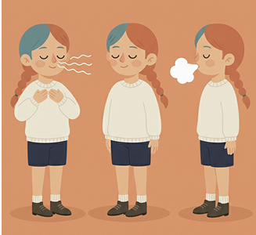
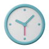

숨결록이 당신의 마음을 지켜줄게요
안정 SOS 키트
불안에서 벗어나는 작은방법

작은 루틴 유지하기
아침 스트레칭 규칙적인 식사 같은 작은 루틴이 신체 리듬을 안정시키고
하루 전체의 불안을 크게 낮춰줘요. 하루를 완벽히 보내려고 하기보단 지킬…
불안 신호 기록하기
불안이 올라오는 상황과 생각의 흐름을 가볍게 기록하면 “왜 불안했는지”
패턴이 보여요. 반복을 알게 되면 불안은 훨씬 덜 낯설어지고 대응도…
자극 줄이기
불안이 올라오는 날엔 카페인, 에너지 드링크, 알코올 같은 자극 물질을
잠시 줄여 보세요. 작은 조절이 심장/긴장감과 신경계 과민함을 크게 완화시킵…
몸을 이완시키기
불안은 몸의 긴장에서 먼저 시작되는 경우가 많아요. 어깨를 털손히 돌리거나
심호흡을 하며 천천히 풀어주면 신경계가 빠르게 안정돼요. 몸이 이완되면 마음도 훨씬 자연…
마음이 쉬어가는 음악
0:00
0:00